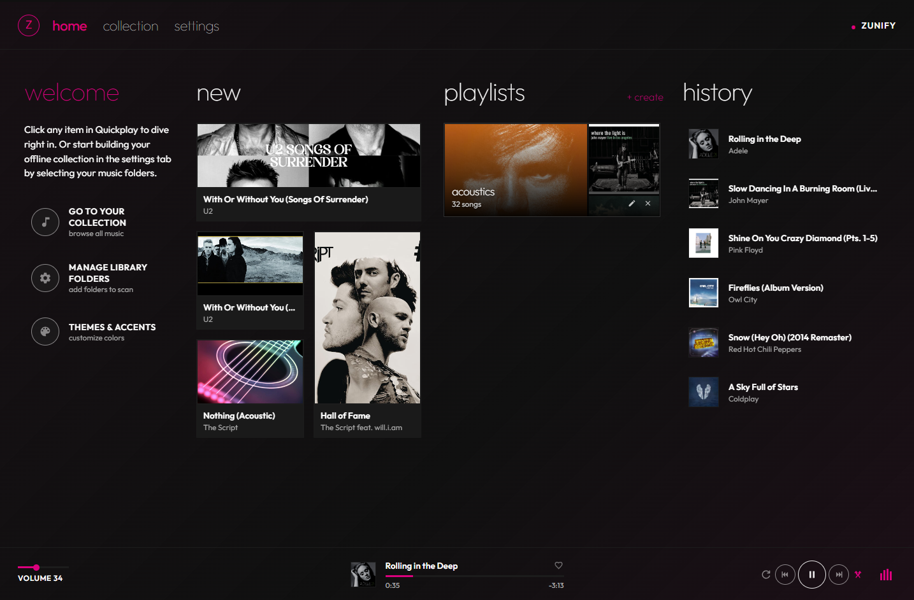

Bring back the soul of your local music collection.
A lightning-fast, privacy-first desktop music player inspired by the iconic late-2000s Microsoft Zune Metro design. Scan your folders in seconds, experience ambient dynamic album bloom, and play your music with zero tracking.
This is the authentic Zunify Angular application running live directly in your browser. Authorize any folder on your computer to scan your local music collection, explore your library, and experience the signature immersive Now Playing mode right now.
Download Zunify Desktop for a frameless edge-to-edge window, low RAM consumption, and zero browser overhead.
Get Zunify DesktopModern streaming players are bloated with paywalls, tracking telemetry, and social feeds. Zunify returns to the pure joy of personal digital music collections.
Zero accounts, zero trackers, zero server uploads. Your music files and listening statistics remain strictly on your machine.
A faithful tribute to Microsoft's beloved late-2000s Zune software. Minimalist typography hierarchy, bold high contrast, and fluid horizontal pivot navigation.
The fullscreen Now Playing screen dynamically extracts color palettes from your album artwork, projecting atmospheric ambient backdrops that morph with each song.
Crisp playback for FLAC, MP3, WAV, M4A, AAC, and OGG formats with fast local metadata parsing and cover art extraction on-the-fly.
Frameless window with custom Zune window controls, low RAM and CPU usage, and global keyboard media keys (Play/Pause, Next, Prev).
Zune's beloved heart rating system lets you quickly favorite tracks, customize your Quickplay hub, and craft offline playlists.
Meticulously crafted to honour Microsoft's iconic design language.

Packaged natively for Windows, macOS, and Linux with modern web standards.
Download the latest release (v1.0.0) for your operating system.
Native Windows desktop application with custom frameless titlebar and global media shortcuts.
Seamless macOS build with native dock integration, dark mode support, and media controls.
Run out-of-the-box on Ubuntu, Debian, Fedora, Arch, and more without extra dependencies.